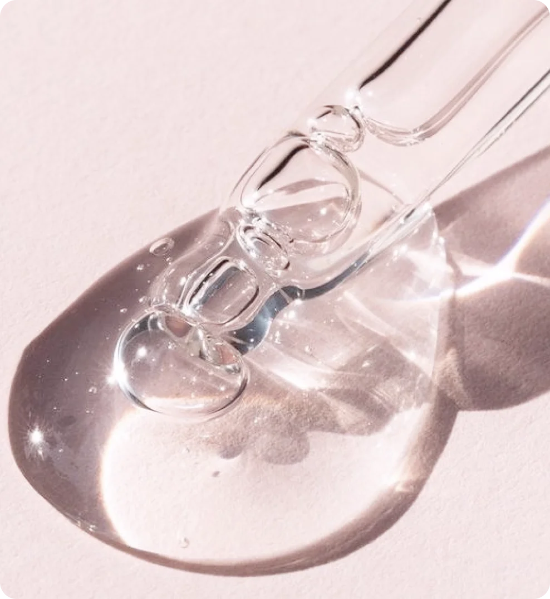

26 марта 2024
вещества
Салициловая кислота относится к классу bha-кислот и является одним из наиболее эффективных и популярных ингредиентов в уходовой косметике. Этот компонент производится из коры и листьев ивы, а также синтетическим путем. Давайте разберемся, как салициловая кислота действует на кожу и кому она подойдет лучше всего.
Описание
Салициловая кислота обладает рядом уникальных свойств, делающих ее незаменимым компонентом в уходе за кожей. При нанесении на кожу она растворяет ороговевшие частички эпидермиса и грязь, которые скапливаются в порах и приводят к возникновению чёрных точек и комедонов. Она обладает противовоспалительным и антисептическим действием, регулирует выработку кожного сала и помогает бороться с акне. Кроме того, салициловая кислота помогает улучшить текстуру кожи, осветлить пигментацию, сужает поры и стимулирует обновление клеток.
Обозначение в составе
Салициловую кислоту в составах косметических средств принято обозначать как Salicylic Acid.

Где содержится
Салициловая кислота используется в косметике как для кожи, так и волос. Она добавляется в пилинги, скрабы, различные очищающие средства, сыворотки, кремы, лосьоны и тонеры.
Салициловая кислота может содержаться в уходовых средствах и как моноактивный компонент, и в комплексе с другими веществами. Обычно себорегулирующее действие салициловой кислоты усиливает цинк, его эффект также направлен на нормализацию выработки кожного сала.
Применение
Салициловая кислота является важным компонентом в уходовой косметике, который помогает достичь чистой, здоровой и ухоженной кожи. Салициловая кислота повышает чувствительность кожи к ультрафиолетовому излучению, потому вместе с ней рекомендуется использовать солнцезащитные средства.
Концентрация вещества в уходовых средствах для лица не должна превышать 2%, а для тела — 3%. Вещество сильно сушит кожу, поэтому средства для пилинга с салициловой кислотой в составе лучше не применять больше 1 раза в неделю.
Людям с сухим типом кожи не рекомендуется использовать скрабы и пилинги с салициловой кислотой, однако совсем от нее можно не отказываться, ведь это вещество способно вернуть усталой коже свежий и здоровый вид. Если вы все же решитесь использовать в уходе средства с салициловой кислотой, мы рекомендуем не забывать об увлажнении кожи.
Салициловая кислота особенно популярна в средствах по уходу за жирной и проблемной кожей. Для жирной кожи рекомендуется использовать продукты с салициловой кислотой, так как они помогут бороться с излишним жирным блеском, очистить поры от загрязнений и предотвратить появление акне.
Людям с чувствительной кожей рекомендуется использовать салициловую кислоту с особой осторожностью: в частности, выбирать продукты с низкой концентрацией компонента и проводить тест на аллергическую реакцию перед применением.